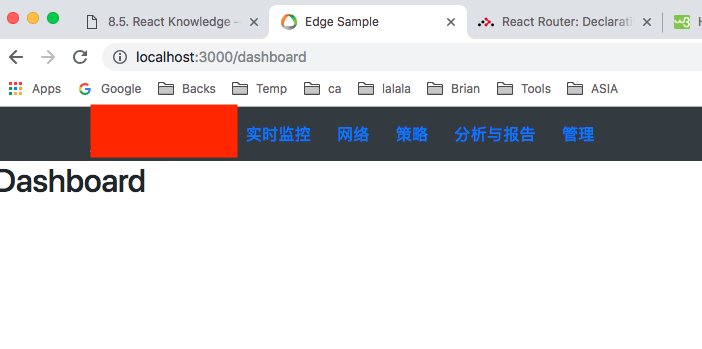
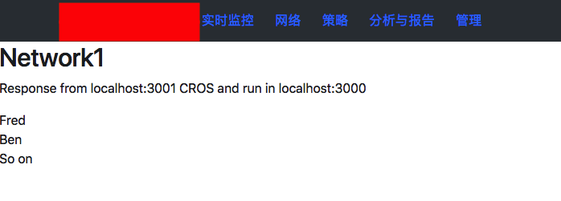
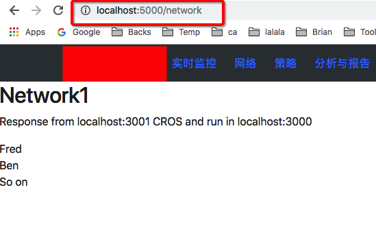

React Sharing / React 框架分享¶
| date: | 2018-09-19 |
|---|---|
| tags: | React, Store, Reflux, Web, node |
| category: | Web |
| slug: | React_Sharing |
| author: | Brian Shen |
| summary: | React Sharing |
Contents
Dev Environment Establish / 开发环境搭建¶
Download Node from https://nodejs.org/en/ and install.
下载 Node 并且安装。
Start a new App / 创建新的App¶
create-react-app is a helper program developed by React.
create-react-app 是 React 自家开发的脚手架程序。
npx create-react-app esample
Let’s have a look at the directory.
可以看一看这个脚手架程序创建的目录。
esample
├── README.md
├── node_modules (Lib/库)
├── package-lock.json
├── package.json (dependencies and scripts/依赖和脚本)
├── public (static files/静态文件)
└── src (code/代码)
Now run npm start to start the app.
现在可以运行 npm start 来启动App.
However, the recommendation:
虽然默认的目录是这样的，但是在 src 文件夹中，面对大型的构架，我们希望的是这样的目录结构：
esample
├─ node_modules (Lib/库)
├─ public (static files/静态文件)
├─ package.json (dependencies and scripts/依赖和脚本)
└─ src (code/代码)
├─ actions (Reflux action/Reflux 的action)
├─ stores (Reflux store/Reflux 的存储)
├─ injection (Reflux inject / Reflux 注入)
├─ util (helpers / 帮助函数)
└─ public (static files/静态文件)
├─ images
└─ css
├─ routing (router/路由设置)
├─ pages (main pages/页面)
└─ components (react components/组件)
├─ common
└─ Each pages
└─ index.jsx (Main entry/主进入点)
Tip
Problems of Absolute path: 相对路径问题
Ref: https://fdp.io/blog/2018/01/18/setting-up-absolute-paths-in-create-react-app/
NODE_PATH=src
Basic components / 基础组件¶
Quite Easy this part because we don’t have to care how to create html elements and how to bind events, how to add elements dynamically. All we have to do is declare, declare. And the scope is in the components itself, which won’t have any effects on others.
基础组件式 React 最容易的部分，我们不需要了解太多HTML 和 CSS， reactstrap 实际上既可以做很多的事情。 我们可以像写 Python 一样去写UI。 每个组件都是一个对象。对， 都是对象。
Let’s explore!
https://reactstrap.github.io/components/tabs/
PS: Let‘s use the prototype from Elves.
我们使用 Elves 给我们的雏形。

Most code is copied from Reactstrap .
大部分的代码我们都从 Reactstrap 拷贝过来的，拿来即用。
class SampleComponents extends React.Component {
constructor(props) {
super(props);
this.toggleTab = this.toggleTab.bind(this);
this.state = {
activeTab: '1'
};
}
toggleTab(tab) {
if (this.state.activeTab !== tab) {
this.setState({
activeTab: tab
});
}
}
render() {
return (
<div style={{marginLeft:"100px",marginRight:"100px",marginTop:"50px"}}>
<Nav tabs>
<NavItem>
<BoostNavLink
className={classnames({ active: this.state.activeTab === '1' })}
onClick={() => { this.toggleTab('1'); }}>
Tab1
</BoostNavLink>
</NavItem>
<NavItem>
<BoostNavLink
className={classnames({ active: this.state.activeTab === '2' })}
onClick={() => { this.toggleTab('2'); }}>
Tab 2
</BoostNavLink>
</NavItem>
</Nav>
<TabContent activeTab={this.state.activeTab}>
<TabPane tabId="1">
<Row>
<Col sm="12">
<h4>Tab 1 Contents</h4>
</Col>
</Row>
</TabPane>
<TabPane tabId="2">
<Row>
<Col sm="12">
<h4>Tab 2 Contents</h4>
</Col>
</Row>
</TabPane>
</TabContent>
</div>
);
}
}
class SubAV extends React.Component {
constructor(props) {
super(props);
this.apply = this.apply.bind(this);
this.enable = this.enable.bind(this);
this.state={
enable: false
}
}
apply(){
alert("enable:" + (this.state.enable ? "True" : "False") );
}
enable(event){
debugger;
this.setState({enable: event.target.checked });
}
render(){
return (<Row>
<Col sm="12">
<div>防恶意软件安全测试
<Input type="checkbox" onChange={this.enable} checked={this.state.enable} />{' '}</div>
<Card>
<CardHeader id="AVTogglerAPT">高级威胁扫描</CardHeader>
<UncontrolledCollapse toggler="#AVTogglerAPT">
<CardBody>
<Button>Go somewhere</Button>
</CardBody>
</UncontrolledCollapse>
</Card>
<Card>
<CardHeader id="AVTogglerExtension">文件扩展名</CardHeader>
<UncontrolledCollapse toggler="#AVTogglerExtension">
<CardBody>
<Button>Go somewhere</Button>
</CardBody>
</UncontrolledCollapse>
</Card>
<Card>
<CardHeader id="AVTogglerScan">扫描优化</CardHeader>
<UncontrolledCollapse toggler="#AVTogglerScan">
<CardBody>
<Button>Go somewhere</Button>
</CardBody>
</UncontrolledCollapse>
</Card>
<Card>
<CardHeader id="AVTogglerEmail">防恶意邮件设置</CardHeader>
<UncontrolledCollapse toggler="#AVTogglerEmail">
<CardBody>
<Button>Go somewhere</Button>
</CardBody>
</UncontrolledCollapse>
</Card>
<Button onClick={this.apply} color="primary">应用</Button>
<Button>重置</Button>
</Col>
</Row>
);
}
}
Let’s add some CSS / 添加修改 CSS 即可实现基本相似的页面效果.
Test / 测试¶
Recommendation : Airbnb ( http://airbnb.io/enzyme/ )
React 本身的测试框架并不是很完善， 官方推荐的是 Airbnb 的测试框架 enzyme .
- Install 安装：
npm i --save-dev enzyme enzyme-adapter-react-16 chai sinon jest-fetch-mock
class SubAV extends React.Component {
...
render(){
return (<Row className="subAV" >
<Col sm="12">
<div className="aisPanel">
<Card>
<CardHeader id="AVTogglerAPT">高级威胁扫描</CardHeader>
</Card>
<Card>
<CardHeader id="AVTogglerExtension">文件扩展名</CardHeader>
</Card>
<Card>
<CardHeader id="AVTogglerScan">扫描优化</CardHeader>
</Card>
<Card>
<CardHeader id="AVTogglerEmail">防恶意邮件设置</CardHeader>
</Card>
</div>
</Col>
</Row>
);
}
}
export { SubAV };
class SampleRest extends Component {
constructor(props) {
super(props);
this.state = {
members: []
};
}
componentDidMount() {
fetch("http://localhost:3001/rest/de_members")
.then(response => response.json())
.then(data => {
console.log(data);
this.setState({members: data})
})
.catch(err => console.log(err));
}
render(){
return <div>
<h2>Network1</h2>
<p>Response from localhost:3001 CROS and run in localhost:3000</p>
{this.state.members.map(item=>(<span>{item}<br /></span>))}
</div>;
}
}
import React from 'react';
import { expect } from 'chai';
import { shallow, mount, configure } from 'enzyme';
import sinon from 'sinon';
import { SampleRest } from 'components/SampleRest.js'
import {SubAV} from 'components/SubAV.js'
global.fetch = require('jest-fetch-mock')
import { Row, Card } from 'reactstrap';
import Adapter from 'enzyme-adapter-react-16';
configure({ adapter: new Adapter() });
//jest.setTimeout(10000);
describe('<SubAV />', () => {
it('renders 1 <Row /> components', () => {
const wrapper = shallow(<SubAV />);
expect(wrapper.find(Row)).to.have.lengthOf(1);
});
it('renders 4 <Card /> components', () => {
const wrapper = shallow(<SubAV />);
expect(wrapper.find(Card)).to.have.lengthOf(4);
});
it('calls componentDidMount', () => {
expect(SubAV.prototype.componentDidMount).to.eq(undefined);
});
});
describe('<SampleRest />', () => {
beforeEach(() => {
fetch.resetMocks()
})
it('calls componentDidMount', (done) => {
sinon.spy(SampleRest.prototype, 'componentDidMount');
fetch.mockResponseOnce(JSON.stringify(["Fred", "Fay"]))
const wrapper = mount(<SampleRest />);
expect(SampleRest.prototype.componentDidMount).to.have.property('callCount', 1);
setTimeout(()=>{
console.log("haha");
console.log(wrapper.text());
wrapper.update();
expect(wrapper.contains(<span>Fay<br /></span>)).to.equal(true);
done();
}, 100)
});
});
Results / 结果 :
PASS src/pages/App.test.js
<SubAV />
✓ renders 1 <Row /> components (6ms)
✓ renders 4 <Card /> components (3ms)
✓ calls componentDidMount
<SampleRest />
✓ calls componentDidMount (115ms)
Test Suites: 1 passed, 1 total
Tests: 4 passed, 4 total
Snapshots: 0 total
Time: 1.881s, estimated 2s
Ran all test suites related to changed files.
L10N / 本地化¶
React itself cannot support L10N. We have to rely on other libraries to implement this.
As one of the most popular library id react-intl (Developed by yahoo 8K).
React 本身不支持 L10N， 我们需要依赖于其他的模块。 最流行的目前是 yahoo 的 react-intl .
- Other choice: 其他的选择为:
react-i18next( https://github.com/i18next/react-i18next 2K)react-intl-universal( https://github.com/alibaba/react-intl-universal Supported by Alibaba 206)
Sample with react-intl / 以 react-intl 为例。
- Install / 安装
npm install react-intl
Code in l10n.zh.json
{
"common" : {
"PRODUCT_NAME" : "亚信安全™ AIS Edge",
"PRODUCT_LONG_NAME" : "亚信安全™ Deep Edge",
"PRODUCT_FULL_NAME" : "Deep Edge",
"PRODUCT_SHORT_NAME" : "TM-DE"
}
}
Code in l10n.en.json
{
"common" : {
"PRODUCT_NAME" : "Trend Micro™ Deep Edge",
"PRODUCT_LONG_NAME" : "Trend Micro™ Deep Edge",
"PRODUCT_FULL_NAME" : "Deep Edge",
"PRODUCT_SHORT_NAME" : "TM-DE"
}
}
Load data and init: / 导入数据 并且初始化：
const en = flat( require("./public/l10n/l10n.en.json") );
const zh = flat( require("./public/l10n/l10n.zh.json") );
ReactDOM.render(
<IntlProvider locale="en" messages={en}>
<Router>
<App />
</Router>
</IntlProvider>,
document.getElementById('root'));
registerServiceWorker();
How to use it / 如何使用:
class SampleL10N extends Component {
constructor(props) {
super(props);
}
render(){
return <FormattedMessage id="common.PRODUCT_NAME" />;
}
}
Router Conception / Router的概念¶
React has its own compatible router module.
React的路由是开放的，但是facebook 仍然提供了一个比较官方的路由模块。
Ref: https://reacttraining.com/react-router/web/guides/philosophy
Routers / 总路由模块
- use a <BrowserRouter> if you have a server that responds to requests and
BrowserRouter : 存在server端逻辑
- use a <HashRouter> if you are using a static file server.
HashRouter : server端只需要提供静态文件和其他的 Restful API
- IE: https://10.21.137.42/policy/objects
- => It can be a server API or a Page router
这个URL 在浏览器中输入时，浏览器向后端请求的就是完整的 API， 可能是一个静态页面，也可能是一个Restful API
- https://10.21.137.42/#/policy/objects
- => It will always call https://10.21.137.42/ to get static file and render nextly.
这个URL 则一定是 https://10.21.137.42/ 的静态文件，Hash 后面的参数是在后面render的时候使用的。
Route Matching / 路由匹配
- You can include a <Route> anywhere that you want to render content based on the location.
It will often make sense to list a number of possible <Route>s next to each other. 路由匹配将 URL 和对应的 组件相关联。
The <Switch> component is used to group <Route>s together.
<Route path='/about' component={About}/> // renders <About/> <Route path='/contact' component={Contact}/> // renders null <Route component={Always}/> // renders <Always/> <Switch> <Route exact path='/' component={Home}/> <Route path='/about' component={About}/> <Route path='/contact' component={Contact}/> </Switch>
Route Rendering Props / 路由渲染属性
<Route>: component, render, and children 可以使用这三种方法， 但是推荐的做法是 component 和 children. You should not use the component prop with an inline function to pass in-scope variables because you will get undesired component unmounts/remounts.
{/* do not do this */} <Route path='/contact' component={(props) => <Contact {...props} extra={someVariable} />} />
Navigation / 导航
- React Router provides a <Link> component to create links in your application.
Wherever you render a <Link>, an anchor (<a>) will be rendered in your application’s HTML. Route 是确定什么样的URL 渲染怎样的组件， 而 Link 和 NavLink 则是 UI 上怎么显示这些锚点 并且相关联。
The <NavLink> is a special type of <Link> that can style itself as “active” when its to prop matches the current location.
Warning
NavLink can cause conflict with reactstrap NavLink, when imported, please add alias to escape.NavLink 会和 reactstrap NavLink 产生冲突，引入时请指定别名。
Route implement / 路由使用实现¶
Install / 安装
npm install react-router-dom(The
create-react-appwill download it automatically as it is so basic / 默认是安装好的)Bootstrap install (for theme) / 安装 Bootstrap 和 Reactstrap (CSS 样式和默认组件).
"reactstrap": "^6.4.0", "bootstrap": "4.1.1"
- Use
NavBarin reactstrap to render basic CSS. 使用 reactstrap 的
NavBar就会有基本的CSS 样式。import { NavLink as RouterNavLink, Link, Route } from 'react-router-dom' import {Button, Navbar, Nav, NavItem, NavLink as BoostNavLink, UncontrolledDropdown, DropdownToggle, DropdownMenu, DropdownItem} from 'reactstrap'; const Dashboard = () => ( <div> <h2>Dashboard</h2> </div> ); class App extends Component { constructor(props) { super(props); } render() { return ( <div> <Navbar color="dark" expand="md"> <img className="navLogo" src={toplogo} /> <Nav navbar> <NavItem> <Button color="link"> <Link to="/dashboard">实时监控</Link> </Button> </NavItem> ... </Nav> </Navbar> <Route path="/dashboard" component={Dashboard} /> <Route path="/network" component={Network} /> </div> ); } }
- Use
And the results / 结果：

Deploy and Debug 部署和调试¶
Debug / 调试
If we just want to develop a pure web Application, it will be quite easy, we didn’t have to do anything as React has done it for us. However, everything is not so easy.
如果我们只是想开发一个单纯的没有后台交互的Web App, 非常简单，我们不需要做任何其他的操作就可以直接调试。 React已经做好了所有的事情。 但是， 我们的Web不可能只有前台。
As reference to Graylog, which I’m quite familiar with, I think the best way is to use local Web Resources with remote.
参考比较大型正规的框架 Graylog，最简单和实用的办法是: 使用本地的UI 资源和远端的Restful API.
please refer to how to set up a Web Server with Express quickly .
如何构建一个简单地后台Restful 程序， 请参考：WebSharing (两分钟上手).
Now lets use web in local and rest API in remote.
现在我们来验证这种模式.
Let’s modify Network Page.
首先是更新一下 网络 页面:
class Network extends Component { constructor(props) { super(props); this.state = { members: [] }; } componentDidMount() { fetch("http://localhost:3001/rest/de_members") .then(response => response.json()) .then(data => this.setState({members: data})); } render(){ return <div> <h2>Network1</h2> <p>Response from localhost:3001 CROS and run in localhost:3000</p> {this.state.members.map(item=>(<span>{item}<br /></span>))} </div>; } }
We enable CORS on the server so that we can fetch results and apply in another App.
在后台， 我们需要使能 CORS, 这是个漏洞，但是调试很方便。这样的话我们就能跨域拿到资源。
All API are provided from backend, so we may have to modify our Backend App to provide a more friendly API.
现在我们看到的Restful 都是 后台拿到的， UI 用的是本地的资源。 这样开发的话， DE 的后台可能也需要进项相应的修改已提供更友好的 Restful API.
Deploy / 部署
Generate static file:
npm run build.将React 代码编译成 IE9+ 可以接受的语法：
npm run buildLet’s see what has been generated.
可以查看下生成了什么:
build/ ├── asset-manifest.json ├── favicon.png ├── index.css ├── index.html ├── manifest.json ├── service-worker.js └── static ├── css │ ├── main.331fc925.css │ └── main.331fc925.css.map └── js ├── main.9f57e139.js └── main.9f57e139.js.mapAll js and lib files are combined into 1 file, which is
main.9f57e139.js.main.9f57e139.js.mapis used for debugging.所有的库文件 和 我们的代码文件都会被压缩合并到同一个文件中.
Let’s run it in a static file server.
我们可以将这些静态文件用一个静态服务器运行:
npm install -g serve serve -s build
Visit / 访问他:
- However, usually we will use Webpack and Loadable. / 当然， 通常我们会使用 Webpack 和 Loadable.
- Webpack: Compress, uglify and minimize files. / 用于压缩 编译 最小化文件
- Loadable: Separate into different files. / 用户将单个 JS 拆分成多个 防止单个文件过大